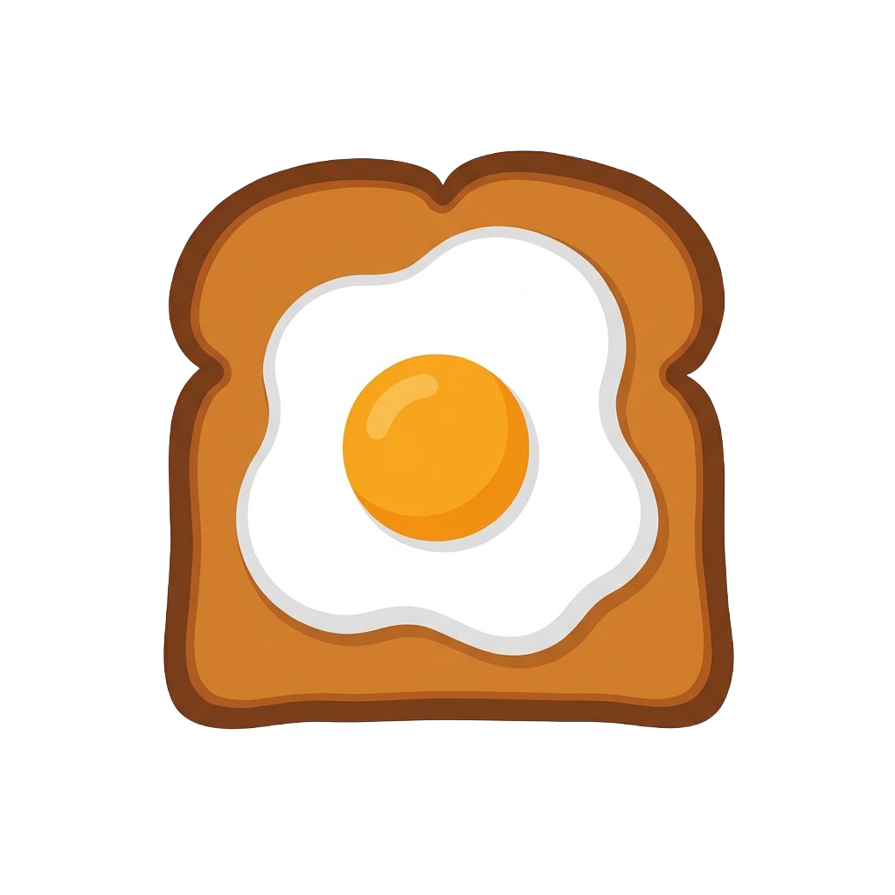

Croque
— editor en el dominio de frecuencia
Pinta sobre el espectro (notch filters) y observa la imagen en tiempo real. Hermitian symmetry included.
Cargando OpenCV.js…
Cargar imagen
Resolución FFT
128 × 128
256 × 256
512 × 512
Pincel
14
Acción
Atenuar ×10 %
Anular (muesca)
Restaurar
Magnitud (log)
Fase
Paso-Bajo
Paso-Alto
Restaurar todo
Descargar PNG
Dominio espacial
—
Dominio de frecuencia
pinta aquí